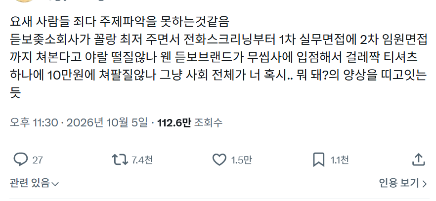
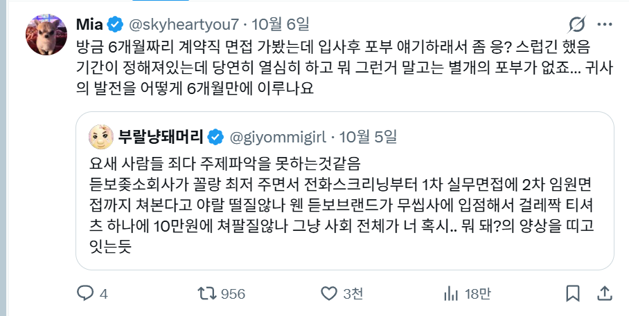

그것도 소통능력 보는 것의 일환이지
'채용 결과는 지원자 개인의 역량외적 요소인 회사내부의 이해관계부터 산업전반의 업황에 이르기까지 다양한 요소가 개입되는 것을 이해하고있다. 우선 내가 할 수 있는 것에 후회없이 최선을 다하는 것에 집중하겠다. 만약 원하지 않는 결과가 나오더라도 이것이 다음을 위한 최선이라고도 생각한다.' 나라면 이렇게 답변할듯
조직에서 일하다보면 개인이 좆같은 상황을 반드시 마주하기 마련인데 그럴 때의 사고와 소통방식을 확인하는 건 당연한 거임
면접장에서 지원자가 뭘 할 수 있겠냐 우선 합리적이고 논리적이되 회사입장에선 듣기 좋은 말 해주고 만약에 합격하더라도 갈지말지는 최종적으로 내가 결정하는 거임
그래도 영 아니다 싶으면 그냥 그자리에서 트위터식 사이다 발언 해주고 나가는 거고
ㅋㅋㅋ 다 전체적으로 느끼고 있나보네
정작 들어가봐야 내부도 개판임ㅋㅋㅋ
대기업 면접때 포부 이런거 안물어보는게 요즘 트렌드 대신 업종 경험이나
그냥 ai 굴려봤냐 정도 물어봄 그리고 나는 직접 하드웨어로 굴려봤다하면 플러스 줌
인터넷에서 아무리 좆소래도
무에서 유를 창조해서 채용절차라도 있는 회사는
사장이 대단한 사람인거임.
말 그대로 이름도 없는 최저 좆소에 지원하는 지원자면 스펙도 그저그럴텐데
뭘 가려 ㅋㅋㅋ 복지 차원에서 최저 생활 보장을 해주는거지.
암것도 못하는데 3000 받는것도 감사해야지.
저런거 물어보는 회사 자체를 걸러야할것 같긴하지만
짧은 기간이지만 회사의 영익에 기여할 수 있도록 최선을 다하겠습니다
정도로만 대답해도 좃소 사장 입장에선 에이스로 보일거 같음
겸손할 필요가 없다고 해서 겸손하지 않아도 된다는 것은 아니라는 것
옷값평균은 왜이렇게 에미뒤진건지
브라이덜 업체의 폭리랑 비슷한것같음
약간 사회의 일말의 허영심을 공략하면 좋은 비지니스가 될것같음
배가 아직 덜 고픈가
서로서로 너 뭐 돼? 를 시전하는 상황이군.. ㅋㅋㅋ
띄
6개월 계약직한테 입사후 포부는 얼탱이 없긴하네
요건 상황마다다르겠지만 글만보면 얼탱이없는거긴함. ㅋㅋㅋ
포부가 어디있어 그냥 6개월동안 열심히하겠습니다지
그냥 인사말 같은거임 식사하셨어? 같은거
작성자가 그렇다는건 아닌데 너 뭐 되냐는 놈들중 내로남불인 종자들도 꽤 있더라. 개드립에서도 너 뭐 되냐고 말한 놈 봤음 ㅋㅋㅋ
남한테는 혐오스럽다니 뭐니 막말하고 내로남불이라 일침짓 잘만하면서
지는 내로남불로 살지 않았다는 식으로 답하길래 내가 증거를 가져오라고 하니 '어쭈? 너 뭐 되냐?'고 말하며 나한테 공손하게 부탁을 하라네 ㅋㅋㅋㅋㅋㅋㅋ
개드립같은 커뮤에서 권력자마냥 지 기분 하나하나까지 세세히 맞춰주는걸 당연하게 생각하는 새끼가 내로남불까지 해댐 ㅋㅋㅋㅋㅋㅋ너무 꼴같잖은 태도라 한동안 기억에 남을 듯함 ㅋㅋㅋㅋ
걍 한국은 오지랖에 간섭질 너무 많음
남이 뭐하든말든 왜 아가리터냐 대가리 찍혀서 너죽고 나죽자 당해야 못떠들지.
ㅋㅋㅋ 진짜 양쪽 다 너 뭐 돼? 느낌이지 뭐.
그냥 열심히하겠다 해야지 뭔 고민을하고있냐
응 나 돼지
지각하지 않고 근태관리 잘하겠습니다?
이상한 사람 거르는 용도 라는건 이해는 가는데
정도를 넘어선 곳이 많은 것도 사실임
블루 라벨
그럼 하지마.. 반대로 넌 뭐 돼? 라고 묻고싶어지네 아무것도 없으니까 중소기업 지원하는거지
그냥 포부 얘기하면되지ㅋㅋㅋ 지는 뭐라도 되는줄아나ㅋㅋㅋ
입사 후 포부는 이직이지.
이건 글쓴이가 너 뭐 돼 이 지랄 하는 것 같은데 자격지심 말도 안되네 이 자식 ㅋㅋㅋㅋㅋ
예전에 중견 면접 볼 때
포부 까지는 아닌데
3개월 뒤에 채용이 안 될 수도 있다(채용연계형이었음)
그럴 때 xx씨라면 어떤 마음을 가지고 마지막까지 업무를 다할거냐
라고 질문했거든
근데 이게 들으면서도 내 귀가 잘못됐나? 싶었움
좀 오버랩 되어서 보여서 그런가
저런 질문 자체가 그닥 달갑진 않은 듯